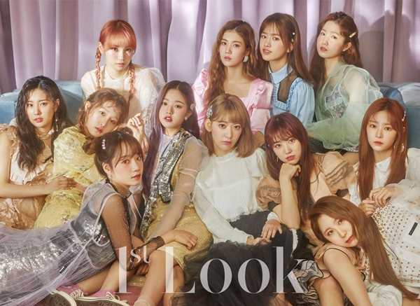

아이즈원
아이즈원(영어: IZ*ONE, 일본어: アイズワン 아이즈원[*])은 2018년 10월 29일 데뷔한 대한민국의 12인조 한일 합작 걸 그룹으로, 9명의 한국인 멤버와 3명의 일본인 멤버로 구성되어 있다. 2018년 M.net에서 방영된 PRODUCE 48에서 시청자들의 투표로 최종화에서 1위부터 12위까지 기록한 장원영, 미야와키 사쿠라, 조유리, 최예나, 안유진, 야부키 나코, 권은비, 강혜원, 혼다 히토미, 김채원, 김민주, 이채연으로 이루어져 있다.
2018년: 한국 데뷔, 데뷔 앨범인 출시
2018 아시아 아티스트 어워드 레드카펫에서 아이즈원
2018년 10월 15일에 공식 SNS 계정을 통하여 아이즈원의 데뷔 음반의 티저가 공개되기 시작하였다. 동년 10월 29일 데뷔 앨범이자 미니 1집인 《COLOR*IZ》 (컬러라이즈)를 발매하였다. 이 당시 ‘COLOR’와 ‘ROSE’의 두 가지 버전으로 발매된 이 음반은 발매 당시 역대 걸그룹 초동 순위 9위, 역대 신인 걸그룹 초동 1위를 기록하였다. 타이틀 곡인 〈La Vie en Rose〉는 프랑스어로 ‘장밋빛 인생’이라는 뜻이다.
10월 29일 오후 6시에 음원이 공개되었고, 오후 8시부터 올림픽홀에서 쇼콘서트 형태의 데뷔 무대가 개최되었다.
11월 2일, 아이즈원의 첫 사인회 'IZ*ONE 1st Mini Album 《COLOR*IZ》발매 기념 사인회'가 서울특별시 용산구 소재의 동자아트홀에서 개최되었다.
11월 8일, 엠넷에서 방영하는 음악 프로그램인 엠카운트다운에 나와서 첫 방송 1위를 했다.
11월 13일, 11월 20일엔 SBS MTV에서 방영하는 음악 프로그램인 The SHOW에 나와서 1위에 해당되는 THE SHOW CHOICE에서 2관왕을 했다.